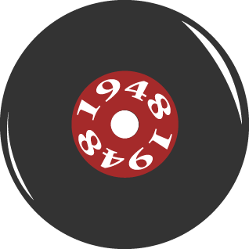
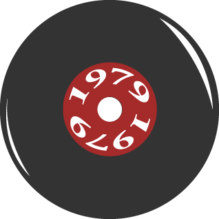

De eerste vinylplaat werd uitgebracht, door een bedrijf genaamd Columbia Records, in 1948. En in 1949 werd de eerste kleinere versie, de 7 inch, uitgebracht. Dit was een single met de titel: “Texarkana Baby” door Eddy Arnold. De plaat werd al gauw het standaard medium voor opnames en hield dat het hele decennia vast. De plaat kreeg een grote voorsprong op de rest doordat het instaat was om heldere geluidskwaliteit en langere stukken muziek vast te leggen.

In 1979 werd de Sony Walkman voor het eerst op de markt gezet. Dit had een grote invloed op de populariteit van platen. Met de Walkman kon je je muziek overal naartoe meenemen, dat kon een platenspeler niet. Maar dit betekende niet het einde van de platen. Veel mensen bleven zich vasthouden aan hun platencollecties door het duidelijk betere geluidskwaliteit en het gevoel van de fysieke ervaring van het afspelen van een plaat.Na de introductie van Spotify begin 2006 begon er iets interessants te gebeuren. Aan de ene kant veroorzaakte de populariteit van het digitaal streamen van nummers voor een verdere voortgang in de digitale muziekwereld en veel muziekliefhebbers stapten over op spotify. Maar aan de andere kant zorgde het ook voor een nieuwe vonk onder de muziekliefhebbers voor fysieke muziekvormen, zoals de vinylplaten.Sinds 2016 maakt de plaat een grote comeback in populariteit. Het is nu iets wat artiesten als merchandise verkopen en sommige platen zijn zelfs waardevolle verzamelobjecten geworden. Steeds meer mensen kopen platen en platenspelers, voor sommigen is de reden nostalgie en voor anderen gewoon een fascinatie. Ook omdat de platen een warm gevoel geeft bij de muziek. En de grote albumhoezen waarin de platen worden geleverd bieden een ervaring die digitale muziek niet kan reproduceren.